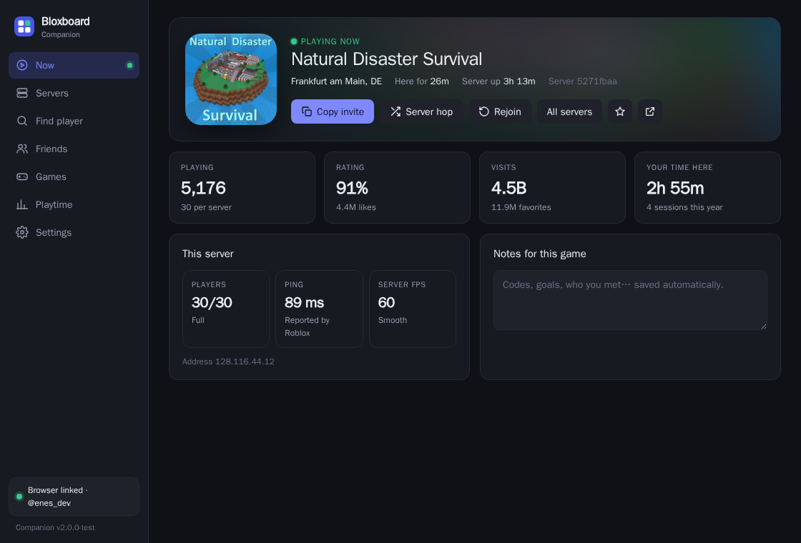
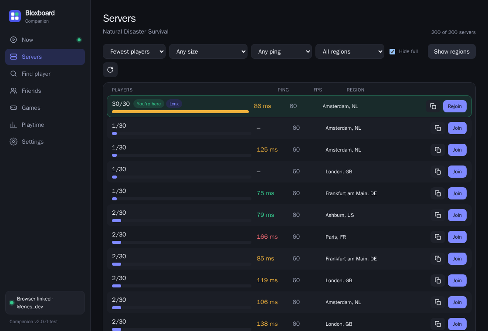
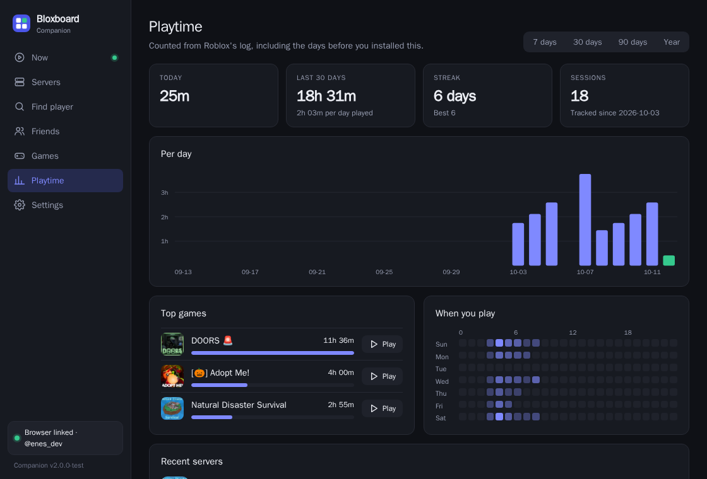
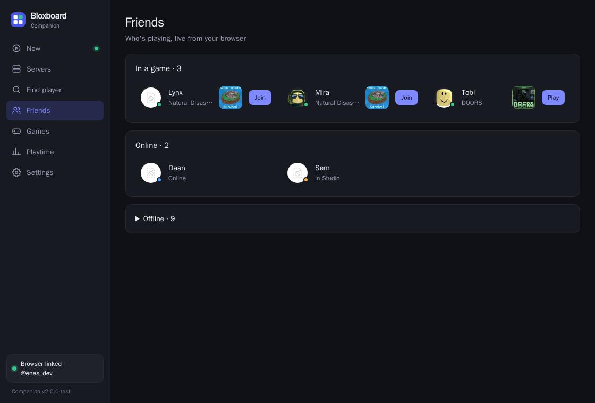

Only reads a log file
Roblox writes a plain text log to %LOCALAPPDATA%\Roblox\logs on every PC. The companion reads it, just like Fishstrap and Bloxstrap do to show your server location.
Bloxboard for the Roblox app. Press Ctrl+Shift+B in game for a panel with your server, a server browser with regions, the player finder, friends, games and playtime. It starts and closes together with Roblox through Fishstrap or Bloxstrap.

No. Executors like Xeno or Velocity get you banned because they inject code into the running game. The companion never touches the game at all.
Roblox writes a plain text log to %LOCALAPPDATA%\Roblox\logs on every PC. The companion reads it, just like Fishstrap and Bloxstrap do to show your server location.
It's a separate window that floats on top. It doesn't draw inside Roblox, read Roblox's memory or attach to its process.
Rejoin and server hop use the same roblox:// links as the Join buttons on roblox.com.
It uses Roblox's public website data. For things that need a login (regions, friends online, finder) it asks the Bloxboard extension in your browser, so it never sees your account.
So it opens when Roblox opens and closes when Roblox closes.
Documents\Bloxboard\BloxboardCompanion.exe.Bloxboard Companion. Application location: the .exe you saved. Launch arguments: --with-roblox.Windows says "Windows protected your PC"? That's SmartScreen being careful with new apps that aren't signed by a big company. Click More info → Run anyway. You only have to do this once.
Server regions, friends online and the player finder need a Roblox login. The companion borrows the one in your browser through the Bloxboard extension, over your own PC only (127.0.0.1).
Game, server location, time in server, how long the server has been up, its players, ping and FPS. Copy invite, server hop (smallest, best ping, busiest, random), rejoin, favorite and notes per game.
Every public server with players, ping and FPS. Filter by size, ping and region, see which ones you visited and which ones your friends are in, and join any of them.
Find which server someone is in by username or display name, then join or copy a link.
Who's in a game, online or in Studio, with Join buttons. Unlinked it still shows your friend list.
Search Roblox games, keep favorites and jump back into what you played lately, straight into the app.
Time per day, streaks, top games, when you play and recent servers. It reads Roblox's older logs too, so it starts with your last week of play.
The small box with your server and quick buttons. Ctrl+Shift+N shows or hides it.
Ctrl+Shift+B opens or closes the panel, Esc goes back to the game. The tray icon opens it too.


